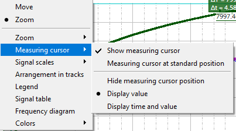

"Show measuring cursor" is a toggle menu item. It switches all existing cursors on or off, this has the same effect as <CTRL+SPACE>. The menu item is displayed as "selected" if at least one cursor is visible.
"Measuring cursor at standard position" is a command menu item. It sets the cursors to their default positions (same effect as <CTRL+SHIFT+SPACE>). The default positions for the first two measurement cursors are at one-third and two-thirds of the horizontal visible range. If more than two cursors exist, the others will be arranged at equal intervals after the second cursor.
If both cursors are visible, the cursor labels can be set to "time and value" format, or only "value" format. Alternatively, they can be hidden completely. These options are mutually exclusive. If the cursors are not visible, these three label format options will be grayed out.
